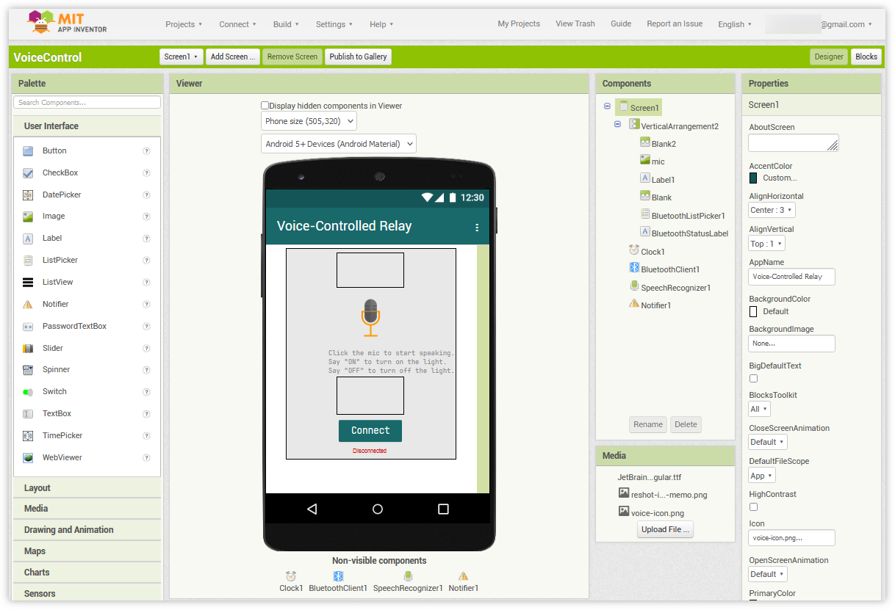
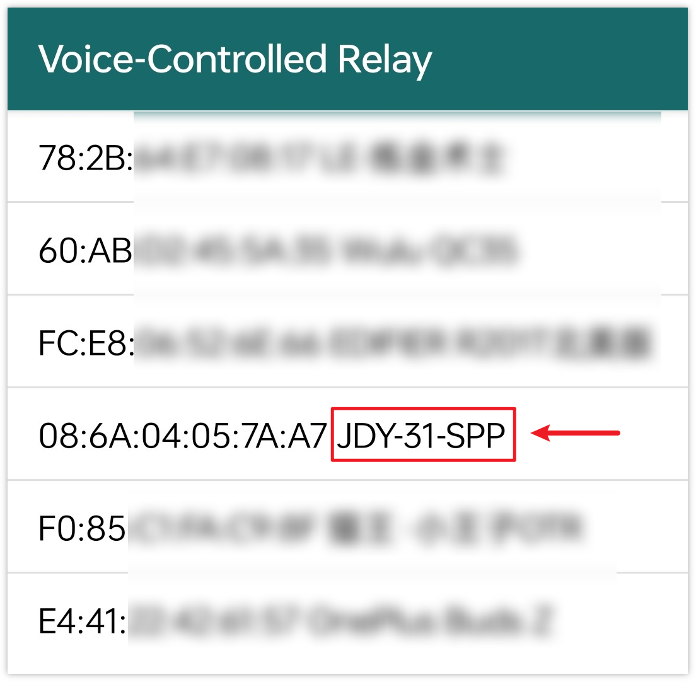
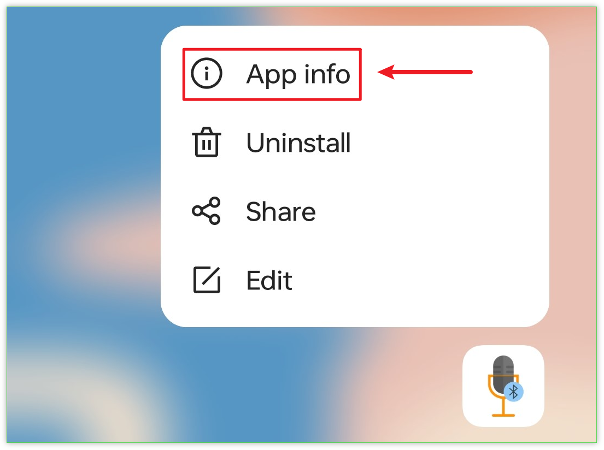
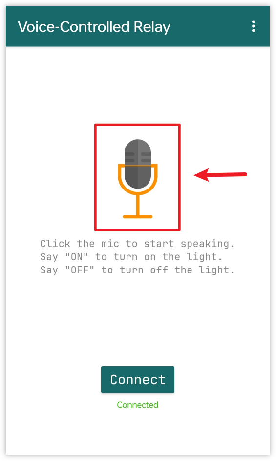

Bemerkung
Hallo und willkommen in der SunFounder Raspberry Pi & Arduino & ESP32 Enthusiasten-Gemeinschaft auf Facebook! Tauchen Sie tiefer ein in die Welt von Raspberry Pi, Arduino und ESP32 mit anderen Enthusiasten.
Warum beitreten?
Expertenunterstützung: Lösen Sie Nachverkaufsprobleme und technische Herausforderungen mit Hilfe unserer Gemeinschaft und unseres Teams.
Lernen & Teilen: Tauschen Sie Tipps und Anleitungen aus, um Ihre Fähigkeiten zu verbessern.
Exklusive Vorschauen: Erhalten Sie frühzeitigen Zugang zu neuen Produktankündigungen und exklusiven Einblicken.
Spezialrabatte: Genießen Sie exklusive Rabatte auf unsere neuesten Produkte.
Festliche Aktionen und Gewinnspiele: Nehmen Sie an Gewinnspielen und Feiertagsaktionen teil.
👉 Sind Sie bereit, mit uns zu erkunden und zu erschaffen? Klicken Sie auf [hier] und treten Sie heute bei!
Bluetooth Sprachgesteuertes Relais
Dieses Projekt kombiniert eine Android-App, die mit dem MIT App Inventor entwickelt wurde, mit einem Arduino Uno Board. Die App bietet eine Spracheingabefunktion. Wenn die Spracheingabe des Benutzers das Wort „an“ enthält, sendet die App eine „1“-Nachricht über Bluetooth an den Arduino, um das Relais einzuschalten. Enthält die Spracheingabe hingegen das Wort „aus“, wird eine „0“-Nachricht gesendet, die den Arduino anweist, das Relais auszuschalten. Nach Erhalt dieser Nachrichten verarbeitet der Arduino sie entsprechend und schaltet das Relais ein oder aus.
Die Android-Anwendung wird mithilfe einer kostenlosen webbasierten Plattform namens MIT App Inventor erstellt. Dieses Projekt bietet eine hervorragende Möglichkeit, sich mit der Schnittstelle zwischen einem Arduino und einem Smartphone vertraut zu machen.
1. Schaltung aufbauen
Warnung
Im folgenden Beispiel wird gezeigt, wie ein Relais zur Steuerung eines Verkehrslichtmoduls verwendet wird. Sie können das Relais in realen Anwendungen auch mit anderen Geräten verbinden. Dabei ist jedoch äußerste Vorsicht im Umgang mit HOHER Wechselspannung geboten. Unsachgemäße oder fehlerhafte Verwendung kann zu schweren Verletzungen oder gar zum Tod führen. Das Projekt ist daher nur für Personen geeignet, die sich mit HOHER Wechselspannung auskennen. Sicherheit hat immer Vorrang.

2. Android-App erstellen
Die Android-Anwendung wird mit einer kostenlosen Webanwendung namens MIT App Inventor entwickelt. Der MIT App Inventor dient als hervorragender Einstieg in die Android-Entwicklung dank seiner intuitiven Drag-and-Drop-Funktionen, die die Erstellung einfacher Anwendungen ermöglichen.
Jetzt geht’s los.
Öffnen Sie Get Started with MIT App Inventor und klicken Sie auf „Online-Tool“, um sich anzumelden. Für die Registrierung bei MIT App Inventor benötigen Sie ein Google-Konto.

Nach dem Login navigieren Sie zu Projects -> Import project (.aia) from my computer. Laden Sie dann die
VoiceControl.aia-Datei hoch, die im Pfadultimate-sensor-kit\iot_project\bluetooth\09-Bluetooth_voice_control_relayzu finden ist.Hier können Sie auch direkt herunterladen:
VoiceControl.aia
Nach dem Hochladen der
.aia-Datei erscheint die Anwendung in der MIT App Inventor-Software. Dies ist eine vorkonfigurierte Vorlage, die Sie nach dem Kennenlernen des MIT App Inventors nach Ihren Wünschen anpassen können.Im MIT App Inventor gibt es zwei Hauptbereiche: den Designer und die Blocks. Sie können oben rechts auf der Seite zwischen diesen beiden Bereichen wechseln.

Der Designer ermöglicht Ihnen, Schaltflächen, Text, Bildschirme und das allgemeine Erscheinungsbild Ihrer Anwendung zu gestalten.

Als nächstes kommt der Bereich Blocks. Hier können Sie individuelle Funktionen für Ihre App erstellen und jedes Element auf der Benutzeroberfläche der App programmieren, um die gewünschten Funktionen zu erreichen.

In diesem Projekt verwenden wir Englisch als Beispiel für die Spracherkennung. Wenn Sie eine Erkennung in einer anderen Sprache wünschen, müssen Sie den unten stehenden Codeblock anpassen und die APK selbst kompilieren.
Zunächst müssen Sie
SpeechRecognizer1.Languageauf den Sprachcode der gewünschten Sprache setzen. Sprachen werden durch einen Sprachcode mit einer optionalen Regionskennung angegeben, wie zum Beispielen,deoderja. Der Sprachcode kann unter List of ISO 639-1 codes gefunden werden.
Danach müssen Sie die entsprechende Bedingung anpassen. Der durch den Pfeil im folgenden Bild gekennzeichnete Teil.

Um die Anwendung auf einem Smartphone zu installieren, wechseln Sie zur Registerkarte Buildn.

Sie können eine
.apk-Datei generieren. Nachdem Sie diese Option ausgewählt haben, erscheint eine Seite, auf der Sie zwischen dem Herunterladen einer.apk-Datei oder dem Scannen eines QR-Codes für die Installation wählen können. Befolgen Sie die Installationsanleitung, um die Installation der Anwendung abzuschließen.Sie können auch unsere vorkompilierte APK hier herunterladen:
VoiceControl.apkWenn Sie diese App im Google Play Store oder einem anderen App-Marktplatz veröffentlichen möchten, können Sie eine
.aab-Datei generieren.
3. Den Code hochladen
Öffnen Sie die Datei
09-Bluetooth_voice_control_relay.inoim Verzeichnisultimate-sensor-kit\iot_project\bluetooth\09-Bluetooth_voice_control_relayoder fügen Sie den Code in die Arduino IDE ein.Wählen Sie das passende Board und den entsprechenden Port aus und klicken Sie anschließend auf die Schaltfläche Hochladen.
Öffnen Sie den Seriellen Monitor und setzen Sie die Baudrate auf 9600, um Debug-Meldungen einzusehen.
4. Verbindung der App mit dem Bluetooth-Modul
Stellen Sie sicher, dass die zuvor erstellte App auf Ihrem Smartphone installiert ist.
Aktivieren Sie zunächst Bluetooth auf Ihrem Smartphone.

Navigieren Sie zu den Bluetooth-Einstellungen auf Ihrem Smartphone und suchen Sie nach Gerätenamen wie JDY-31-SPP.

Nach dem Anklicken bestätigen Sie die Kopplungsanfrage im aufpoppenden Fenster. Falls ein Kopplungscode erforderlich ist, geben Sie „1234“ ein.

Öffnen Sie nun die frisch installierte Voice-Controlled Relay-App.
In der App klicken Sie auf die Schaltfläche Connect, um die Verbindung zwischen der App und dem Bluetooth-Modul herzustellen.

Diese Seite zeigt eine Liste aller gekoppelten Bluetooth-Geräte. Wählen Sie die Option
xx.xx.xx.xx.xx.xx JDY-31-SPPaus der Liste. Der Gerätename wird neben der jeweiligen MAC-Adresse angezeigt.
Sollten keine Geräte angezeigt werden, könnte dies daran liegen, dass der App die nötigen Berechtigungen fehlen. In diesem Fall müssen Sie die Einstellungen manuell anpassen.
Um zur Seite App-Informationen zu gelangen, halten Sie das App-Symbol gedrückt und wählen es aus.

Navigieren Sie zur Berechtigungsseite.

Aktivieren Sie unter Nahegelegene Geräte die Option Immer, damit die App nach Geräten in der Umgebung suchen kann.

Starten Sie die App neu und wiederholen Sie die Schritte 5 und 6 für eine erfolgreiche Bluetooth-Verbindung.
Nach erfolgreicher Verbindung gelangen Sie zur Hauptseite. Dort können Sie das Relais über die Schaltflächen „ON“ oder „OFF“ steuern.

Zwar können Sie das Relais auch mit kurzen Sprachbefehlen wie „on“ oder „off“ steuern, empfehlenswert sind jedoch vollständige Sätze wie „turn on the light“, um Fehlinterpretationen zu vermeiden.
Die Spracherkennung basiert auf Googles Spracherkennungsmotor. Daher könnte es notwendig sein, Speech Recognition & Synthesis im Voraus zu installieren. Bei den meisten Android-Smartphones ist diese Funktion jedoch bereits vorinstalliert.


5. Code-Erläuterung
Kommunikation mit dem Bluetooth-Modul einrichten
#include <SoftwareSerial.h> const int bluetoothTx = 3; // bluetooth tx to 3 pin const int bluetoothRx = 4; // bluetooth rx to 4 pin SoftwareSerial bleSerial(bluetoothTx, bluetoothRx); // Declare SoftwareSerial object for Bluetooth communication
Dieser Abschnitt initialisiert die Bluetooth-Kommunikation mit Hilfe der SoftwareSerial-Bibliothek. Diese Bibliothek ermöglicht dem Arduino, einen zusätzlichen seriellen Port zu nutzen. Der „TX“-Pin des Bluetooth-Moduls ist mit Pin 3 und der „RX“-Pin mit Pin 4 des Arduino verbunden.
Variablen und Steuer-Pin für das Relais definieren
char character; // Character received from Bluetooth serial String message; // Stores the complete message from Bluetooth const int relayPin = 8;
In diesem Abschnitt deklarieren wir Variablen, um einzelne Zeichen (
character) und die komplette Nachricht (message) vom Bluetooth zu speichern. DerrelayPinwird auf Pin 8 initialisiert, der zur Steuerung des Relais verwendet wird.Serielle Kommunikation initialisieren und den Modus des Relais-Pins festlegen
void setup() { Serial.begin(9600); bleSerial.begin(9600); pinMode(relayPin, OUTPUT); }
In der
setup()-Funktion initialisieren wir den Standard-Seriell-Port und den Bluetooth-Seriell-Port mit einer Baudrate von 9600. Zudem setzen wir denrelayPinals Ausgang.Bluetooth-Nachrichten lesen und das Relais steuern
void loop() { while (bleSerial.available() > 0) { character = bleSerial.read(); message = message + character; if (character == '#') { message = message.substring(0, message.length() - 1); Serial.println(); Serial.print("DEBUG:"); Serial.println(message); if (message == "1") { digitalWrite(relayPin, HIGH); Serial.println("On"); } else if (message == "0") { digitalWrite(relayPin, LOW); Serial.println("Off"); } message = ""; delay(200); } } }
Die
loop()-Funktion überprüft kontinuierlich auf eingehende Nachrichten von Bluetooth. Bei Erhalt einer Nachricht wird jedes Zeichen zurmessage-Zeichenfolge hinzugefügt. Sobald das Zeichen#erkannt wird, gilt die Nachricht als vollständig. Wir entfernen dann das#, geben eine Debug-Nachricht aus und prüfen den Inhalt. Wenn dieser „1“ lautet, wird das Relais eingeschaltet; bei „0“ wird es ausgeschaltet. Anschließend wird diemessage-Zeichenfolge geleert und kurz gewartet, bevor nach der nächsten Nachricht gesucht wird.